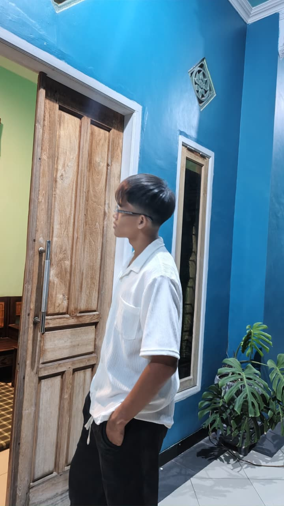

WHO I AM
Designer yang berpikir seperti developer.
Saya Akhmad Gaza Ghozali, digital creator yang mengubah ide kompleks menjadi pengalaman digital yang sederhana, jelas, dan menyenangkan digunakan.

Menghubungkan estetika dan fungsi.
Perjalanan saya dimulai dari desain grafis, lalu berkembang ke UI/UX dan frontend development. Perpaduan ini membantu saya melihat sebuah produk dari dua sisi: bagaimana produk terasa dan bagaimana produk bekerja.
Saya menikmati proses kolaborasi, eksplorasi ide, dan iterasi sampai sebuah solusi benar-benar siap dipakai.
20+
Projects
3+
Years Learning
Curious
Selalu mencari cara baru untuk membuat produk lebih berguna.
Collaborative
Terbuka pada feedback dan senang bekerja lintas disiplin.
Detail-oriented
Memperhatikan detail kecil yang membuat pengalaman terasa istimewa.